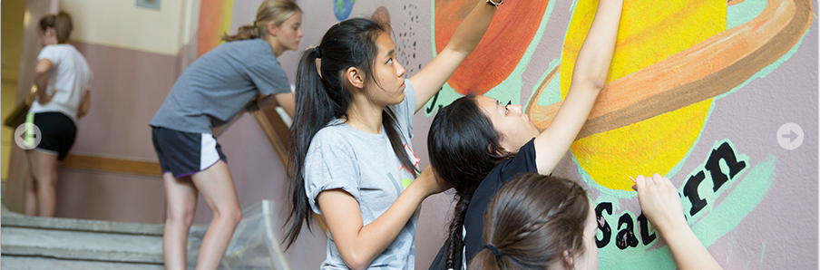

Resources for International Students
| Academics | Research | Campus Life |
|---|

Living in St. Louis
- How to discover good food: Yelp.com
- How to get invovled in entertainment activities at St. Louis: Sauce Magazine
- Visit the Loop: Visit the Loop
- Find out more about payroll and taxes: Payroll and Taxes
- How to get a driver's license: Missouri Department of Revenue
Resources for International Students
- International students organization: for networking, academics information exchange, career development, etc.
- Academic advisers: great way to quickly learn about the right classes to take, and academic programs to pursue.
- School activities: volunteer, forums, tech talks, career fair, etc.
- Residential college: great way to quickly know people around you.
What they think of studying abroad
"Studying abroad could be a little bit scarry at first, when everyone else speaks a different language and everything else looks different too. I felt hard to blend in the culture and get along well with people around me, primarily because fo the cultural difference."
------Leonardo, class of 19
"The number one challenge is definitely learning stuff in a different lanaguage. It was not that difficult to understand the lectures, but to understand what the students talk about takes quite a bit of effort. Their talks are usually a mixture of slangs, something that you cannot look up in a dictionary and could vary its meaning under different circumstances."
------Emily, class of 17
English Language Program
English Language Program is a great way to improve your speaking and writing, get involved in some fun students activities, and in general, to achieve higher fluency in English. At WashU, we offer great support for nonnative speakers, and facilitate their academic success at WashU
For more information, please go to English Corner
| Contact us | About us | Advice & Suggestions |
|---|